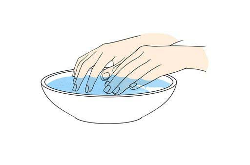
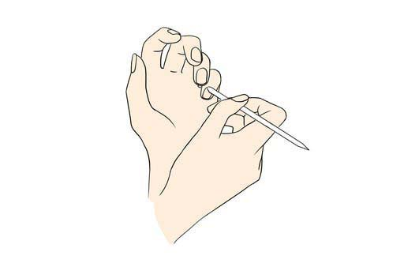
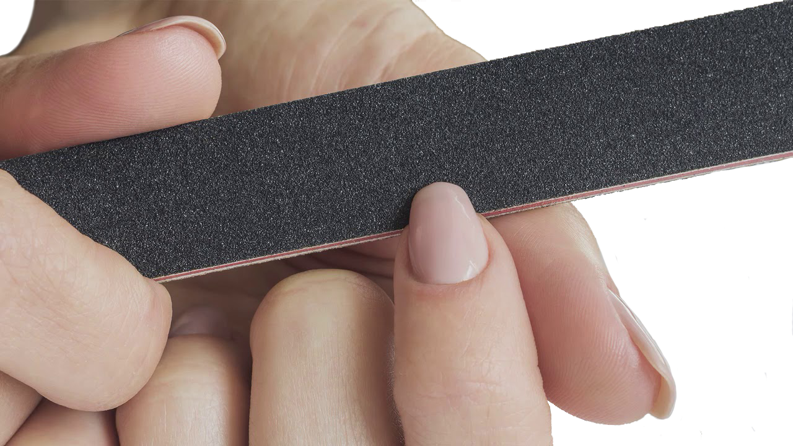

Техники маникюра
Маникюр - прежде всего уход за ногтями. Без правильной техники можно повредить ноготь настолько, что его придется восстанавливать огромное количество времени.
Но естественно у каждого мастера есть свои способы как делать маникюр. Он может быть с использованием аппарата, ацетона или пилки или других средств, а также подготовки к самому процессу.
Классический
Это один из самых популярных способов придать ногтям и коже ухоженный вид. Классический маникюр начинают с корректировки формы ногтей. Перед обработкой кутикулы делают ванночку для размягчения кожи.
Европейский
Этот вид маникюра и педикюра очень похож на классический. Главное различие заключается в том, что кутикулу не срезают. С ней работают более щадящим способом — наносят гель-ремувер, который растворяет ороговевшие частицы кожи и позволяет с легкостью ее отодвинуть.
После использования этого геля руки помещают в ванночку с водой и размягчающим составом. Спустя пару минут можно отодвигать кутикулу.
Аппаратный
Аппаратный маникюр и педикюр, как правило, «сухие»: наросшую кожу (а если быть точнее, ее ороговевшие частицы) убирают с помощью абразивных аппаратных насадок из металла или керамики, и для этого ее не нужно размягчать, так что можно обойтись без замачивания в ванночке.

Японский
Все начинается с корректировки формы, далее — работа над кутикулой с помощью ремувера. Его же используют для очищения ногтевых пластин. После этого в них втирают специальные пасту и пудру на основе пчелиного воска с минералами. Их текстура закрывает собой микро повреждения пластин, выравнивая и укрепляя ногти. На этом же этапе их полируют — ногти приобретают глянцевый блеск. А потом восстановление пудрой и пастой закрепляют с помощью нанесения сыворотки; иногда этот шаг в японском маникюре пропускают, завершая процедуру кремом для рук и маслом для кутикулы.

Бразильский
Для корректировки формы в бразильском маникюре в ход идут пилочки. После этого по коже рук распределяют питательный крем, надевают на них перчатки и оставляют на 5 минут. Следующий шаг — работа с кутикулой. Для этого перчатки надрезают на кончиках, а их основная часть остается на руках (крем продолжит увлажнять кожу). Уже смягченную кутикулу отодвигают апельсиновой палочкой. В завершение процедуры перчатки снимают, а остатки крема стараются в массировать в кожу.
